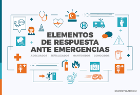

|
La prevención de accidentes y lesiones es un aspecto fundamental en cualquier entorno laboral o personal. Se enfoca en identificar, mitigar y eliminar los riesgos que podrían provocar accidentes o lesiones a las personas. Esto implica una serie de medidas proactivas que van desde la evaluación de riesgos hasta la implementación de prácticas de seguridad. El proceso de prevención de accidentes y lesiones incluye varios pasos clave. En primer lugar, se lleva a cabo una evaluación exhaustiva de los riesgos presentes en el entorno, identificando posibles peligros y determinando su probabilidad de ocurrencia y las consecuencias asociadas. Luego, se desarrollan e implementan medidas de control para reducir o eliminar estos riesgos, como el uso de equipos de protección personal , la implementación de procedimientos de seguridad y la capacitación del personal. |
|  |
Los procedimientos de emergencia son protocolos y acciones específicas diseñadas para enfrentar situaciones críticas e inesperadas que pueden poner en riesgo la seguridad y el bienestar de las personas, así como los activos materiales de una organización. Estos procedimientos se establecen con el objetivo de minimizar el impacto de la emergencia, proteger vidas y propiedades, y facilitar una respuesta rápida y efectiva ante diferentes escenarios de crisis. Los procedimientos de emergencia abarcan una amplia gama de situaciones, como incendios, desastres naturales, accidentes químicos, amenazas de seguridad, entre otros. Cada tipo de emergencia requiere un conjunto específico de acciones y protocolos para gestionarla de manera adecuada y segura. |
|
Las normativas de seguridad laboral son reglamentos y directrices establecidos por las autoridades competentes para garantizar un entorno de trabajo seguro y saludable para los empleados. Estas normativas están diseñadas para prevenir accidentes laborales, lesiones y enfermedades relacionadas con el trabajo, así como para promover prácticas seguras en el lugar de trabajo Las normativas de seguridad laboral abarcan una amplia gama de áreas, que van desde la protección contra incendios y la manipulación segura de sustancias químicas hasta la ergonomía y el control de riesgos psicosociales. Estas normativas varían según el país y la industria, pero generalmente incluyen requisitos específicos en cuanto a la identificación y evaluación de riesgos, el uso de equipos de protección personal, la capacitación del personal en materia de seguridad, la implementación de medidas de control de riesgos y la realización de inspecciones regulares de seguridad. |
|
La prevención de enfermedades laborales es un aspecto crucial de la seguridad y salud ocupacional que se enfoca en identificar, mitigar y eliminar los riesgos que pueden causar enfermedades relacionadas con el trabajo. Estas enfermedades pueden surgir debido a la exposición a sustancias químicas peligrosas, condiciones de trabajo insalubres, factores ergonómicos desfavorables, o situaciones de estrés laboral prolongado. Para prevenir las enfermedades laborales, es fundamental llevar a cabo una evaluación exhaustiva de los riesgos presentes en el lugar de trabajo. Esto implica identificar los agentes y factores de riesgo que pueden afectar la salud de los trabajadores y determinar su probabilidad de ocurrencia y las posibles consecuencias para la salud. |
|
La cultura de seguridad se refiere al conjunto de valores, actitudes, comportamientos y prácticas que prevalecen dentro de una organización en relación con la seguridad en el lugar de trabajo. Se centra en crear un entorno donde la seguridad sea una prioridad compartida por todos los miembros de la organización, desde los empleados de nivel básico hasta la alta dirección. Para fomentar una cultura de seguridad efectiva, es importante que los líderes de la organización establezcan el tono desde arriba, demostrando un compromiso genuino con la seguridad y respaldando activamente las iniciativas de seguridad. Esto implica la asignación de recursos adecuados para programas de seguridad, la comunicación clara de expectativas de seguridad y la participación activa en actividades de seguridad. |
|
La promoción de la salud mental en el lugar de trabajo implica la creación de un entorno laboral que fomente el apoyo, la resiliencia y el equilibrio entre la vida laboral y personal. Esto se logra a través de diversas medidas, como la sensibilización sobre la salud mental, la reducción del estigma asociado a los trastornos mentales, y la implementación de programas y políticas que promuevan el bienestar emocional de los empleados. Además, la capacitación en salud mental y la sensibilización son herramientas importantes para promover un ambiente de trabajo saludable. Los empleados deben recibir información sobre cómo reconocer los signos de estrés y ansiedad, cómo acceder a recursos de apoyo y cómo mantener un equilibrio entre el trabajo y la vida personal. |